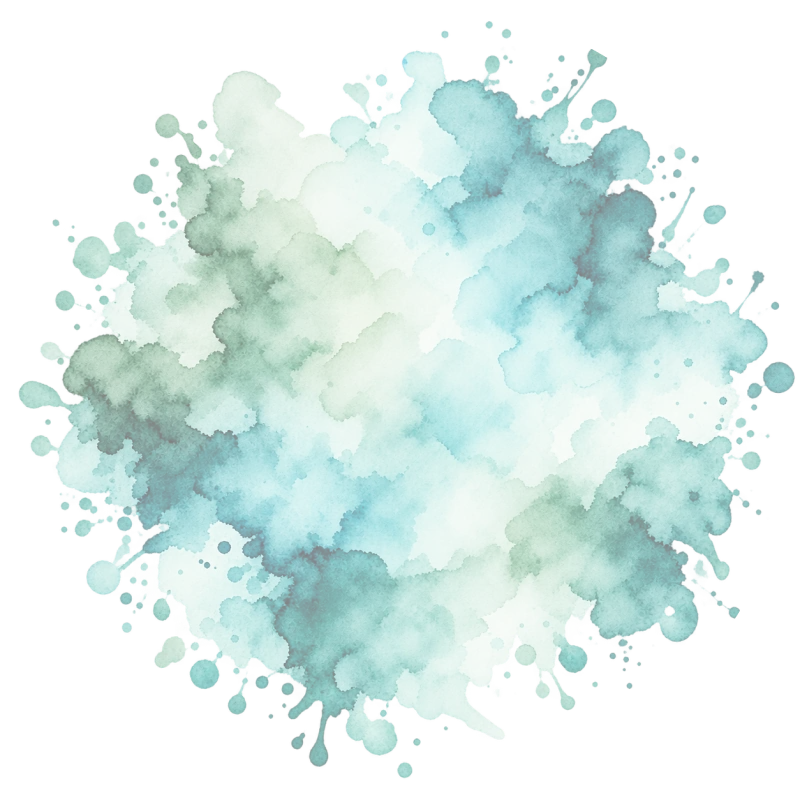

Nybegynder intro
Torsdag i ulige uger
Fordybelse i ét tema
Et kursus for dig som nybegynder, hvor du bliver ført trygt igennem simple male og tegne-teknikker med fokus på ét tema.
Du behøver ingen erfaring.
8 torsdage kl. 19-22 i ulige uger. Pris: 3.450 kr.
læs mere